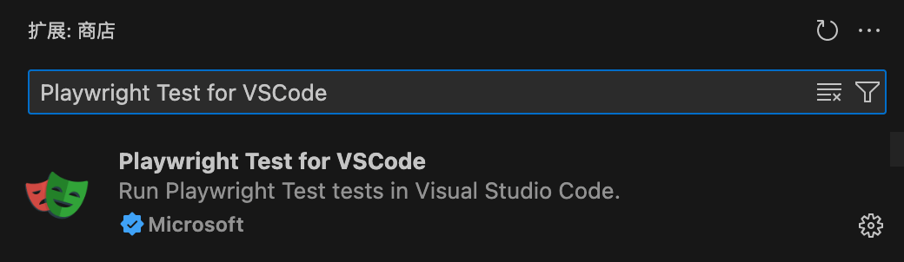

Playwright VS Code 開発環境設定
Playwright 開発での使用が推奨されますVS Code、なぜなら JavaScript/TypeScript、デバッガー、拡張機能のサポートが非常に強力だからです。
VS Code のインストール
- アクセスしてくださいVS Code 公式サイトダウンロードしてインストールします。
- インストール完了後、あわせてインストールすることをおすすめします中国語言語パック（拡張機能マーケットで検索
Chinese (Simplified)）。
VS Code 関連内容の参考：https://www.runoob.com/vscode/vscode-tutorial.html
必須の拡張プラグイン
VS Code の拡張機能（Extensions）パネルで、以下のプラグインを検索してインストールします：
Playwright Test for VSCode
- 公式が提供する Playwright プラグイン
- 機能: テストケースの実行/デバッグ、テストレポートの表示、スクリプトの録画、トレースの生成
- 拡張機能 ID：
ms-playwright.playwright

JavaScript / TypeScript サポート（VS Code に標準搭載されており、通常は追加インストール不要）
推奨（任意）：
- ESLint（コードスタイルを統一）
- Prettier - Code formatter（ワンクリックでコードをフォーマット）
Playwright プロジェクトの初期化
まだプロジェクトを初期化していない場合は、最初に実行します：
npm init playwright@lates
VS Code プラグインがプロジェクト内のplaywright.config.ts/jsを自動的に認識し、テストビューを有効にします。
VS Code 設定
VS Code 設定を開く（ショートカットキーCtrl+, 或 Cmd+,）、以下の設定を確認します：
-
保存時の自動フォーマット
検索format on save→ チェックを入れるEditor: Format On Save -
ターミナルのデフォルトシェル（お使いのシステムに合わせて選択）
Windows の場合は推奨PowerShell或Git Bash
macOS/Linux はデフォルトでOK
デバッグ設定（launch.json）
VS Code の左側でクリック「実行とデバッグ」→ 構成を作成し、選択Node.js、生成.vscode/launch.json、Playwright デバッグ設定を追加します。例：
{
"version": "0.2.0",
"configurations": [
{
"name": "Debug Playwright Test",
"type": "node",
"request": "launch",
"program": "${workspaceFolder}/node_modules/.bin/playwright",
"args": ["test", "--project=chromium", "--headed"],
"console": "integratedTerminal",
"internalConsoleOptions": "neverOpen"
}
]
}
これで VS Code でショートカットキーを押してF5デバッグを開始でき、Playwright はUIモードで実行されるため観察しやすいです。
Playwright プラグインパネルの使用
プラグインをインストールしたらPlaywright Test for VSCode、左側に「Playwright」アイコンが表示されます：
- プロジェクト内のテストファイルとテストケースのリストを直接確認できます
- ケースの右側にある ▶ ボタンをクリックすると実行できます
- 右クリックして選択Debug Testステップ実行（デバッグ）ができます
- 実行に失敗したテストは直接トレースファイルを確認できます
よく使うコマンド
VS Code のターミナルで実行：
npx playwright test # 运行全部测试 npx playwright test login.spec.js # 运行指定文件 npx playwright codegen # 启动录制工具（自动生成脚本） npx playwright show-report # 打开测试报告
Testing Sidebar（テストサイドバー）
拡張機能をインストールすると、VS Code の左側に Testing アイコン（実験室のビーカーアイコン）が表示されます。
Testing Sidebar をクリックして入ると、すべてのテストファイルのリストが表示されます。
ここでは次のことができます：
- ファイルを展開して各
describeとtest - 再生ボタンをクリックして個別のテストまたはすべてのテストを実行
- テストの実行状態をリアルタイムで確認（緑=成功、赤=失敗、グレー=スキップ）
- テストを右クリックしてその他のオプション（デバッグ、定義へ移動など）にアクセス
Debug Mode（デバッグ）
VS Code 拡張機能を使用すると、通常のコードをデバッグするように Playwright テストをデバッグできます：
ブレークポイントの設定
コードの行番号の左側をクリックするだけで、赤いブレークポイントを追加できます。
ブレークポイントの横を右クリックして、Debug Testを選択すると、テストはブレークポイントで一時停止します。
デバッグ機能
- ステップオーバー（F10）、ステップイン（F11）、ステップアウト（Shift+F11）
- 変数の現在値を表示
- 呼び出しスタックを表示
- デバッグコンソールで式を実行
Live Debugging（ライブデバッグ）
Live Debugging は VS Code 拡張機能の独自機能です。
オプションを有効にすると、Show Browserテストを実行する際、コード内の Locator をクリックすると、ブラウザウィンドウに対応するページ要素がハイライト表示されます。
Locator が複数の要素に一致する場合、Playwright は一致したすべての項目を同時にハイライトします。
コード内で Locator を直接編集でき、ブラウザには変更後の一致結果がリアルタイムで表示されます。
Pick Locator（ロケーターの取得）
Testing Sidebar の下部にあるPick Locatorボタンをクリックします。
ポップアップしたブラウザで対象要素をクリックすると、VS Code のPick Locatorボックスに最適なロケーターが表示されます。
Enter キーでクリップボードにコピーし、テストコードに貼り付けるだけです。
Playwright は最も安定した意味的に明確なロケーター方式を自動的に選択します（優先順位: role > text > testid）。
Record New Test（新規テストの録画）
Testing Sidebar でRecord newボタンをクリックします。
Playwright がブラウザウィンドウを開き、そこで行うすべての操作（ナビゲーション、クリック、入力）が録画されます。
ツールバーからアサーションを生成することもできます：
- Assert visibility—— 要素が表示されていることをアサート
- Assert text—— 要素がテキストを含むことをアサート
- Assert value—— 要素の値をアサート
録画が完了したらブラウザを閉じると、コードが自動的にtest-1.spec.tsファイルに生成されます。
Record at Cursor（カーソル位置で録画）
既存のテストコードで挿入したい位置にカーソルを置いてクリックし、Record at cursor。
Playwright がブラウザで後続の操作を録画し、生成されたコードをカーソル位置に挿入します。
この機能は既存のテストに手順を追加するのに最適です。
その他の拡張機能
クリックしてノートを共有
ノートはこの記事の内容を拡張したものである必要があります！
記事の投稿は、ここをクリック
登録招待コードの取得方法
ノートを共有する前に必ずログイン！
登録招待コードの取得方法